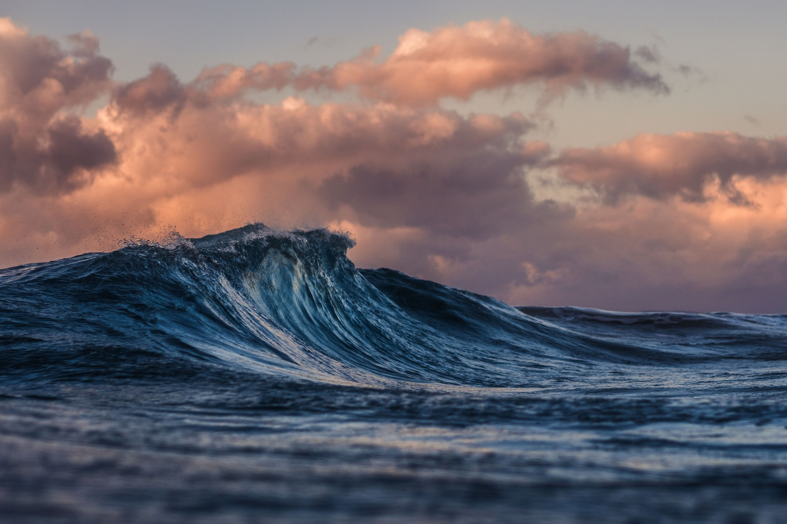

FEATURED
Blue Ocean
Waves Crash
See the beautiful oceans of the Pacific coast where the water is so clean you can see the sand.

FEATURED
Long Exposure
River Bridge
Long Exposure Photography is when you leave the shutters open longers than usual to pick up more light